Porcelánico.
Gracias a sus características técnicas y a sus actualizados procesos de elaboración, hoy en día los pavimentos y revestimientos porcelánicos permiten infinidad de usos y aplicaciones, tanto en suelo como en revestimiento de paredes, y tanto en interiores como en exteriores.
Su baja porosidad y resistencia al agua convierten a los porcelánicos en un material perfecto como aislante térmico, además de ser un material fácil de limpiar, idóneo para colocar en zonas altamente transitadas como puede ser edificios de oficinas, hoteles, recibidores y estancias de viviendas, baños, piscinas, cocinas, fachadas…
El vertiginoso avance de las nuevas tecnologías y del sector ha hecho que los porcelánicos evolucionen de una forma impresionante.
Hoy te podemos ofrecer una amplia gama de calidades superiores, e incluso aquellas que imitan a la perfección texturas naturales como, por ejemplo, el parqué, las maderas, la piedra natural, …etc.
Y si lo que buscas no está en exposición, lo buscamos en la Bagnoteca, nuestra biblioteca de catálogos.
Novedades 202637

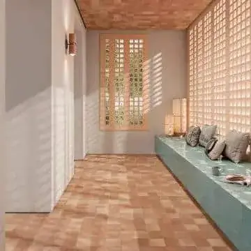
PorcelánicoMezclar piezas clásicas y contemporáneas en un mismo revestimiento suele desentonar¿Cómo se le da profundidad a una pieza pequeña sin subir de formato?
O domina el formato tradicional, o domina el patrón actual. Que convivan sin que uno se coma al otro es poco frecuente.
Terre, de WOW Design, lo hace posible combinando bases mate matéricas con esmaltes en brillo, en un guiño al barro y sus variaciones de color.
Dos formatos: 7×28 cm, el clásico ladrillo, y 11,6×11,6 cm, revestimiento tradicional, junto a seis motivos geométricos.
Porcelánico apto para pavimento y revestimiento; al ser pieza pequeña, permite combinar series entre sí sin que choquen.

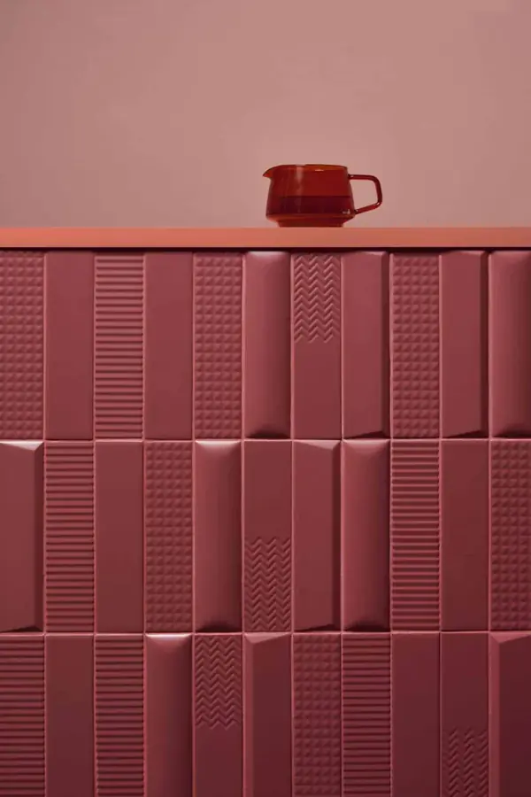
Porcelánico¿Cómo se le da profundidad a una pieza pequeña sin subir de formato?
Con color, casi siempre. Con sombra real, casi nunca.
Biscuit lo consigue: seis superficies opacas y tridimensionales de 41zero42, en 5×20 cm. Seis tonos empolvados — Burdeos, Terra, Polvo, Blanco, Salvia, Noche.

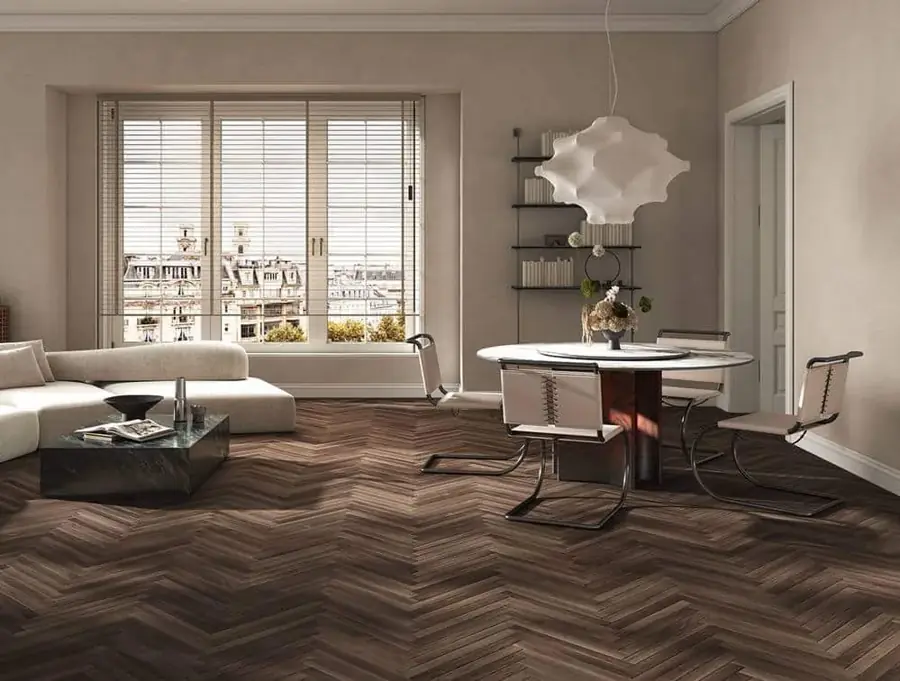
PorcelánicoLa madera natural y el agua nunca se han llevado bien del todo.
En zonas húmedas, tarde o temprano la madera acaba cediendo.
Terratinta lo evita con Oakbricks: porcelánico en formato 4,8×45 cm, seis tonalidades de roble y una veta de alta fidelidad táctil, con nula absorción, ideal para espiga o colocaciones verticales.
Si quieres el efecto madera sin sus limitaciones, te mandamos muestras.
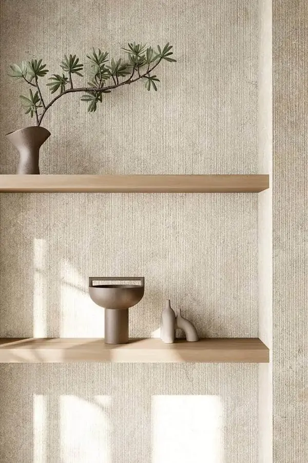
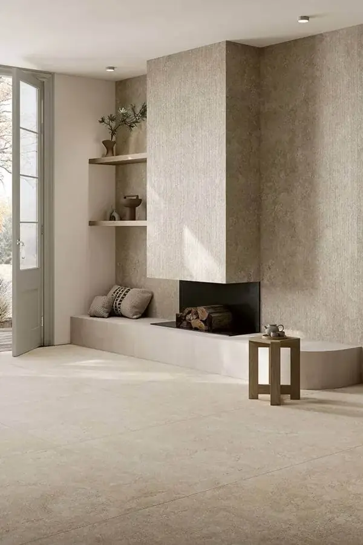
Porcelánico¿Cómo se reviste rápido sin multiplicar juntas ni sobrecargar la obra?
Cuantas más piezas hacen falta, más juntas y más peso se acumulan.
Millerighe resuelve ambas cosas dentro del sistema WIDEgres280 de Coem Ceramiche: placas de 6 mm con relieve lineal que modula la luz, instalables sobre soportes existentes, reduciendo cortes y tiempos de obra.
Si tienes plazos ajustados, te contamos cómo se optimiza la instalación.
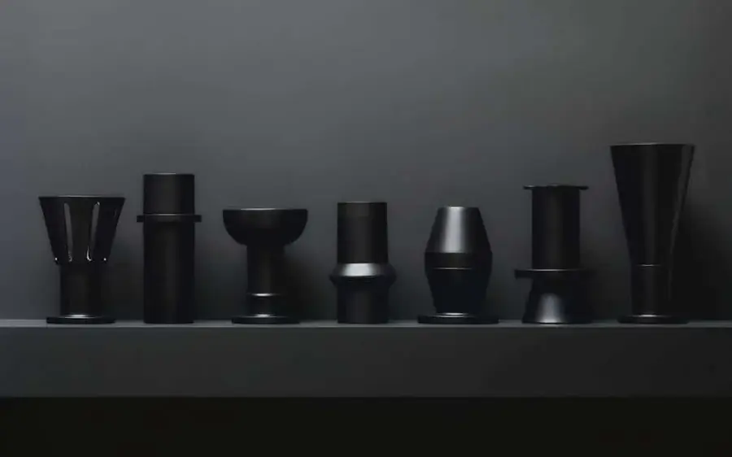
PorcelánicoPorcelánicos decorativos Coppie di Fatto Black – Mutina
Edición cerámica concebida por Nathalie Du Pasquier que se sitúa entre objeto artístico y elemento funcional.
Las piezas, realizadas con lógica artesanal, proponen morfologías abiertas y reversibles que permiten múltiples usos: jarrón, cuenco o contenedor según su posición.
Su acabado negro y su carácter casi escultórico las convierten en accesorios con valor narrativo para proyectos de interiorismo donde el detalle doméstico se entiende como parte del concepto espacial.
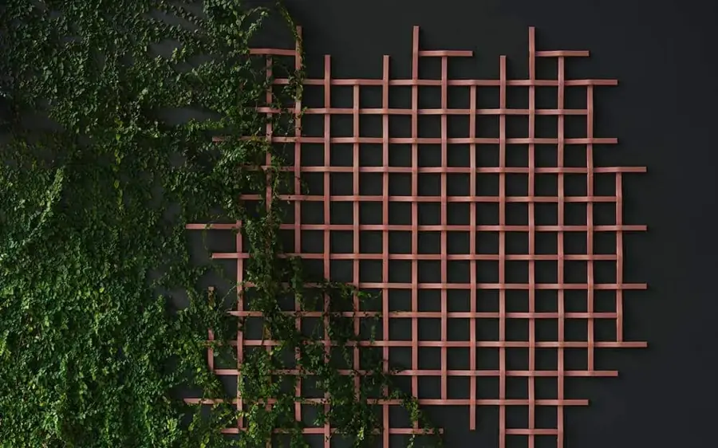
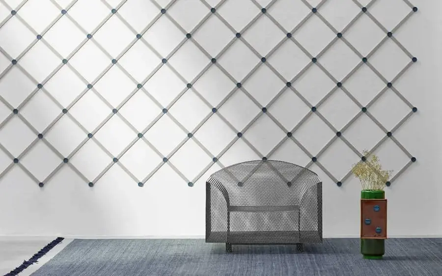
PorcelánicoWall Instalations – Mutina
Wall Installations aborda el revestimiento cerámico como elemento arquitectónico activo, más allá de la baldosa convencional.
El sistema introduce piezas geométricas diseñadas para generar relieve, profundidad y variación lumínica sobre el plano vertical, permitiendo trabajar la pared como un lienzo en blanco.
Las incorporaciones Aria y Adagio Outdoor amplían el uso a distintos contextos, incluidos exteriores, manteniendo control dimensional y precisión de montaje.
Una herramienta pensada para definir espacios creando un lenguaje expresivo único, sin recurrir a recursos decorativos añadidos.
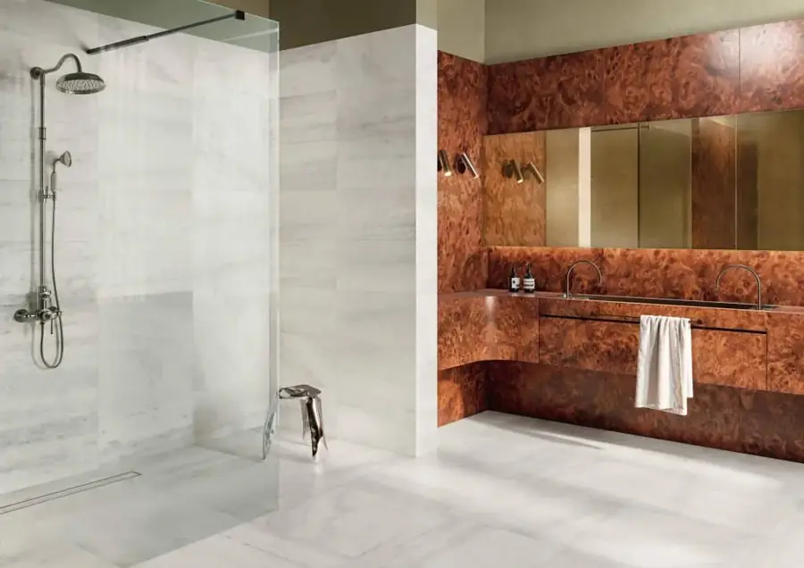
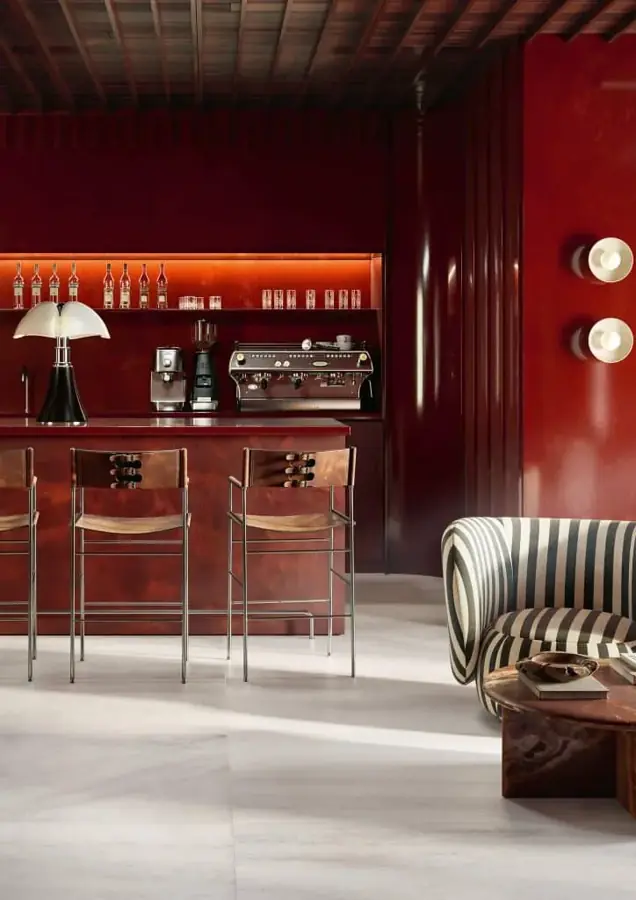
PorcelánicoEl mármol impresiona, pero no siempre perdona el mantenimiento diario.
Su belleza tiene un coste de cuidado que no todos los espacios pueden asumir.
Milano Sublime traslada ese carácter al gres porcelánico: inspirado en el mármol de Candoglia, en los tonos Puro y Lume, con la estabilidad cromática y la continuidad gráfica que exigen las superficies amplias.
Si necesitas ese efecto sin sorpresas de mantenimiento, hablamos de opciones.
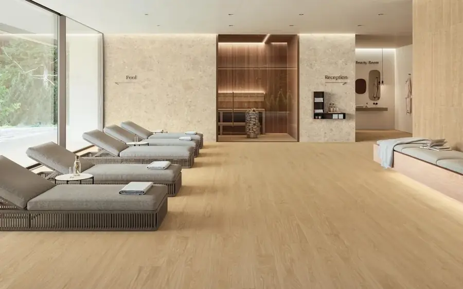
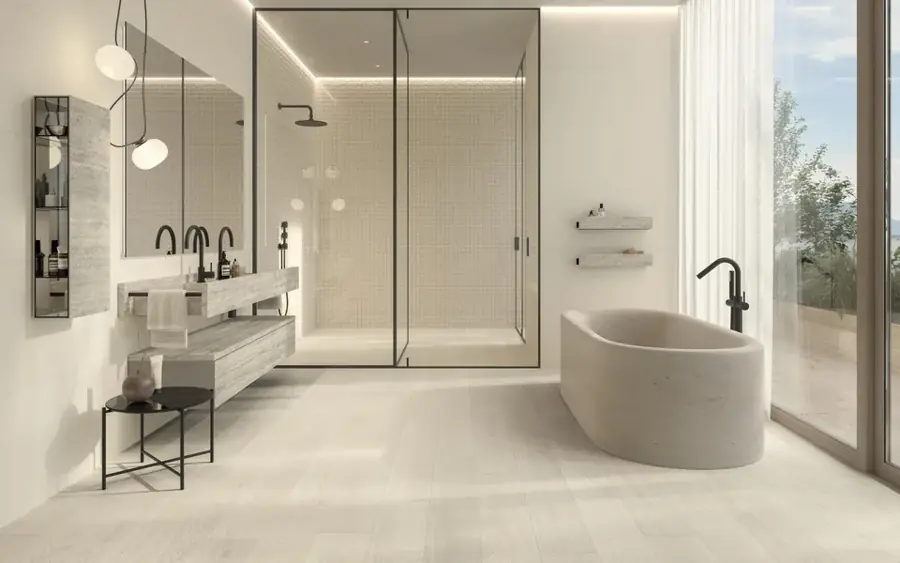
PorcelánicoPavimentos y revestimientos efecto roble LOG – Altas Concorde
Log Select mejora la serie presentada el año pasado con nuevas superficies porcelánicas efecto roble sin nudos, desarrolladas junto a Itlas para obtener un veteado limpio y altamente realista.
Las variantes Pure, Sawn y Flamed ofrecen tres lecturas de la madera: desde un acabado minimalista hasta texturas con marca de sierra o flameado, mucho más vividas.
Su neutralidad cromática facilita integraciones en viviendas y proyectos comerciales, creando envolventes cálidas y homogéneas aptas para continuidad interior-exterior.
Una alternativa estable, duradera y de estética natural.
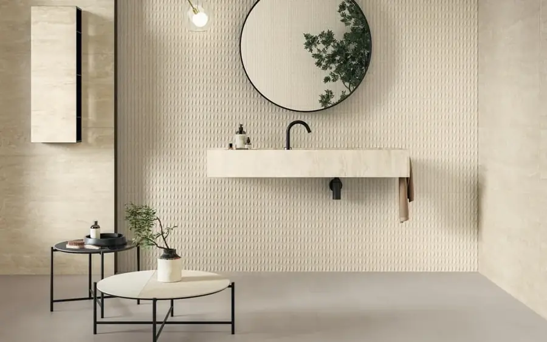
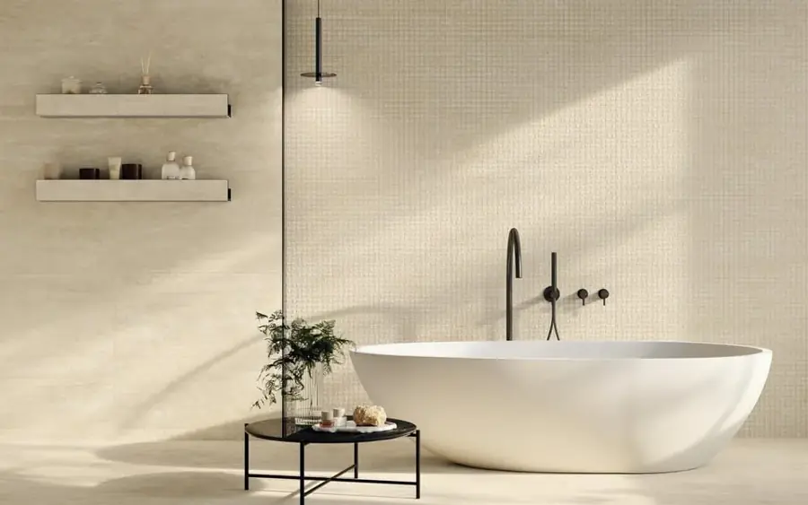
PorcelánicoPavimentos y revestimientos imitación travertino MARVEL T – Altas Concorde
Colección porcelánica que reinterpreta el travertino en clave contemporánea, con varias tipologías y una paleta que cubre tonos cálidos, neutros y grises.
Incluye formatos estándar y opciones de 12 mm para encimeras, ampliando su aplicación en proyectos integrados.
La serie destaca por sus relieves 3D (Arch, Mini Qube y Qube), que aportan volumen a los revestimientos, ofreciendo un resultado similar al de los mosaicos.
Una solución versátil para viviendas y espacios comerciales que buscan un travertino sutil, actual y fácil de mantener.
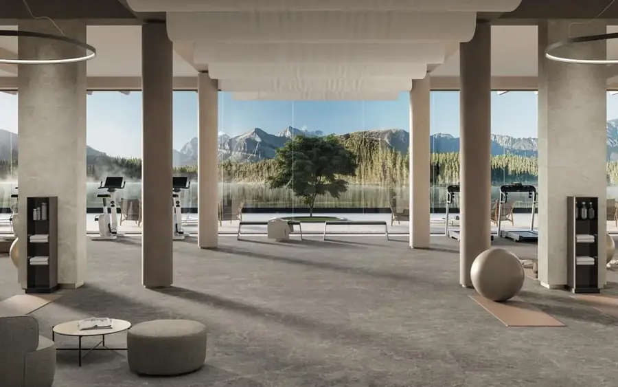
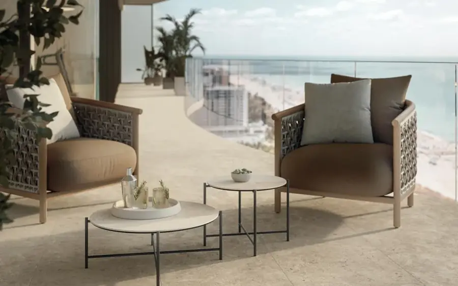
PorcelánicoPavimentos y revestimientos efecto piedra NYRA – Altas Concorde
Stories es una colección de piezas porcelánicas 10×10 cm con 8mm de grosor, pensada para generar composiciones gráficas modulables.
Cada serie —Dance, Eddie, Caravan y Costiera— parte de una base blanca (mate o brillante) sobre la que se desarrollan patrones ilustrados que permiten crear zócalos, murales o acentos decorativos en baños y cocinas.
Su formato reducido facilita transiciones, remates y zonas de detalle sin sobrecargar el espacio. Una solución versátil para proyectos que buscan identidad visual controlada.
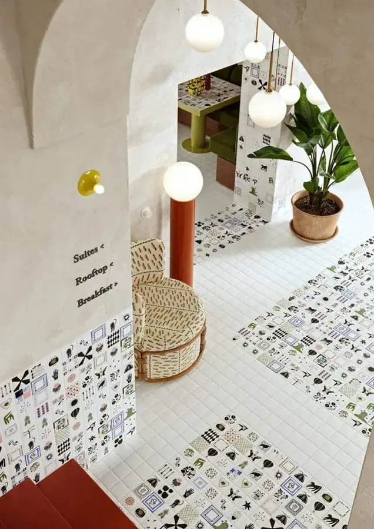
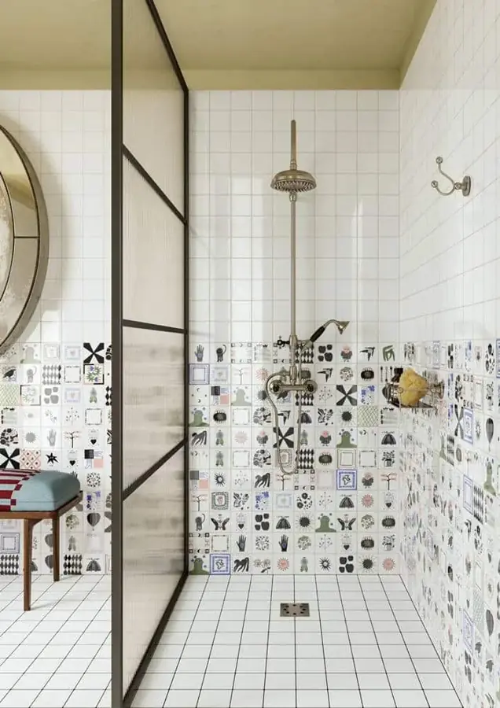
PorcelánicoPorcelánicos modulables Stories – 41zero42
Stories es una colección de piezas porcelánicas 10×10 cm con 8mm de grosor, pensada para generar composiciones gráficas modulables.
Cada serie —Dance, Eddie, Caravan y Costiera— parte de una base blanca (mate o brillante) sobre la que se desarrollan patrones ilustrados que permiten crear zócalos, murales o acentos decorativos en baños y cocinas.
Su formato reducido facilita transiciones, remates y zonas de detalle sin sobrecargar el espacio. Una solución versátil para proyectos que buscan identidad visual controlada.
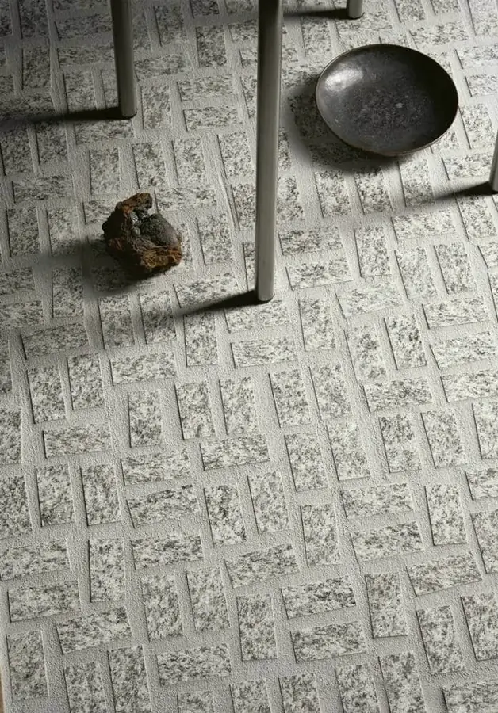
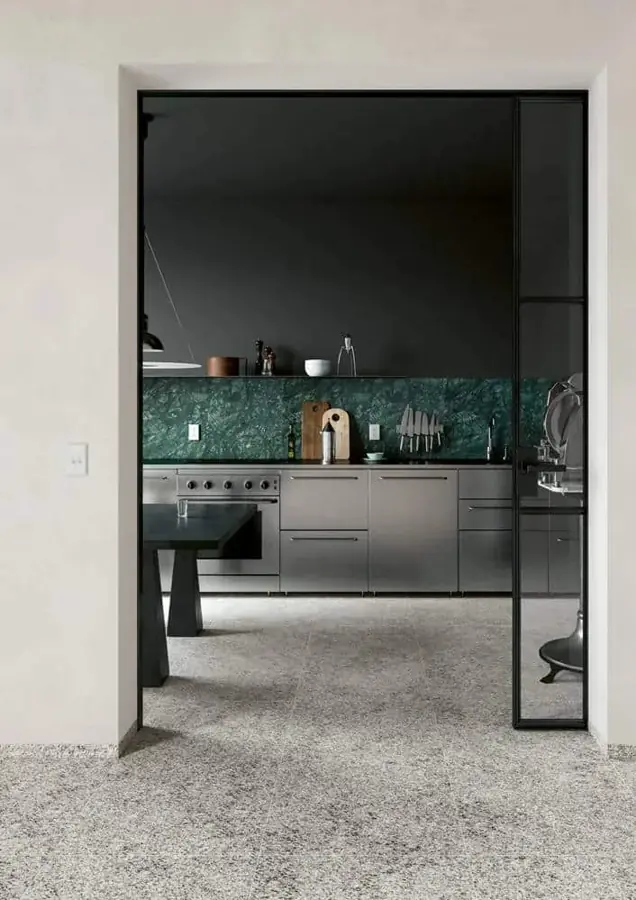
PorcelánicoPorcelánicos Brutus efecto granito – 41zero42
Brutus interpreta la estética brutalista desde una mirada contemporánea, combinando textura y contraste.
Su efecto granito se presenta en dos acabados —Natural y Rugged— y puede coordinarse con el mármol Guatemala o el formato metálico brillante Cromo.
Esta gama permite crear superficies de fuerte presencia material y alto impacto visual, adecuadas para revestimientos y pavimentos que busquen balance entre la solidez de la piedra y el refinamiento de los acabados pulidos.
Una fusión rompedora que combina en esta colección lo mejor de la estética europea y latinoamericana.
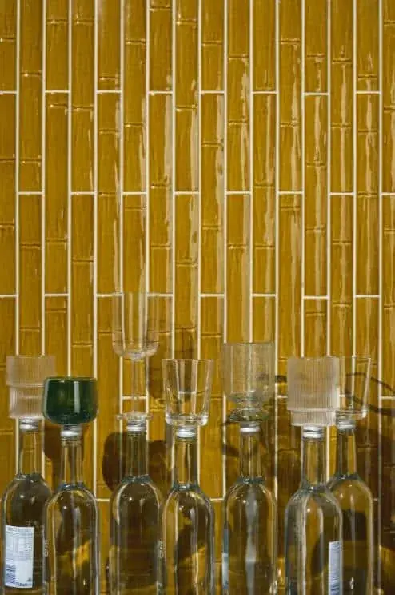
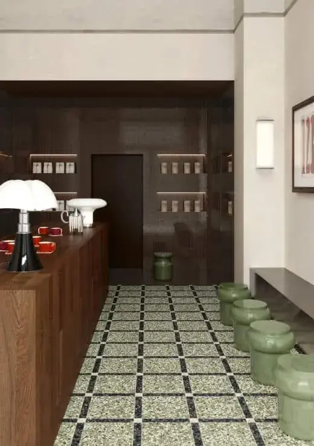
PorcelánicoGres Porcelánico Milano70 – 41zero42
Nueva propuesta en gres porcelánico en bicocción con esmaltes aplicados mediante un proceso tradicional.
Su condición artesanal genera variaciones cromáticas naturales en las piezas y realza el valor artístico de la colección,
Inspirada en la estética milanesa de los años 70, está concebida principalmente como revestimiento de paredes interiores y exteriores gracias a su resistencia y comportamiento frente a heladas.
También puede instalarse en pavimentos de bajo tránsito, donde el uso genera un desgaste previsto que se integra de manera natural en la estética del producto.
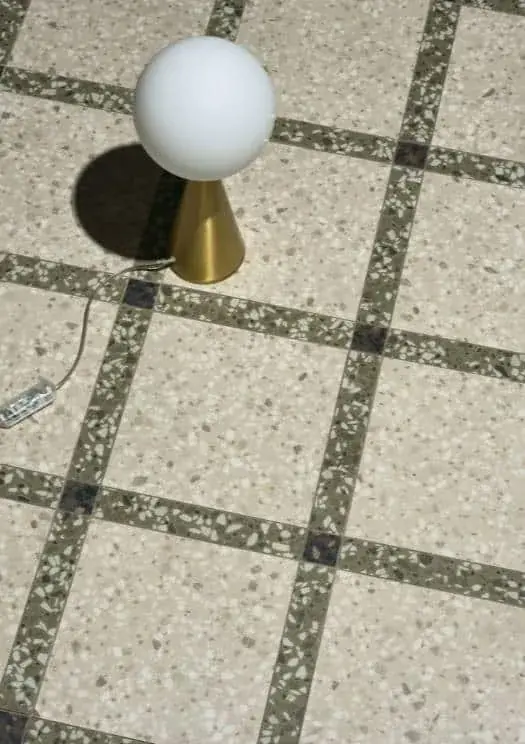
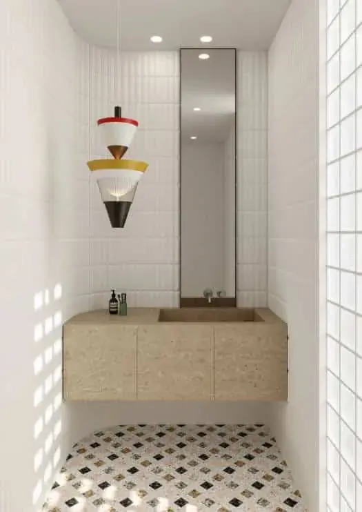
PorcelánicoPavimentos porcelánicos coloreados digitalmente Chicco – 41zero42
La colección Chicco propone pavimentos porcelánicos coloreados digitalmente inspirados en el forjado veneciano.
Se presenta en cinco tonalidades (Greige, Verde, Senape, Rosa y Cacao) y tres tramas gráficas, que permiten modularidad y variaciones de diseño según el proyecto.
Su resistencia, estabilidad cromática y bajo mantenimiento hacen que sea apta para uso en viviendas, locales comerciales y espacios públicos.
Una solución que combina estética tradicional reinterpretada y prestaciones técnicas propias del gres porcelánico contemporáneo.
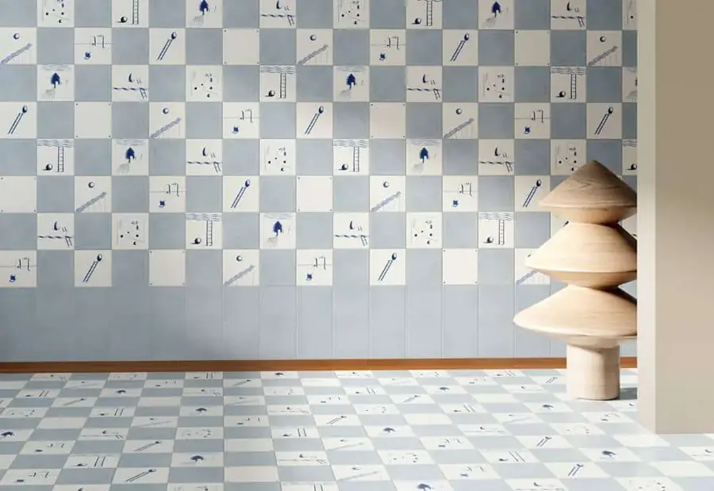
PorcelánicoPorcelánicos Dintorni - Mutina
Una colección versátil que ofrece dos propuestas muy distintas.
Por un lado, una serie compuesta por tres patrones gráficos en tres combinaciones cromáticas, diseñadas para mezclarse con cinco colores lisos a juego, permitiendo infinitas composiciones modulares.
Por otro, Isola, una subcolección con diez diseños gráficos que se entrelazan en una narrativa visual más libre y poética, casi como un universo onírico.
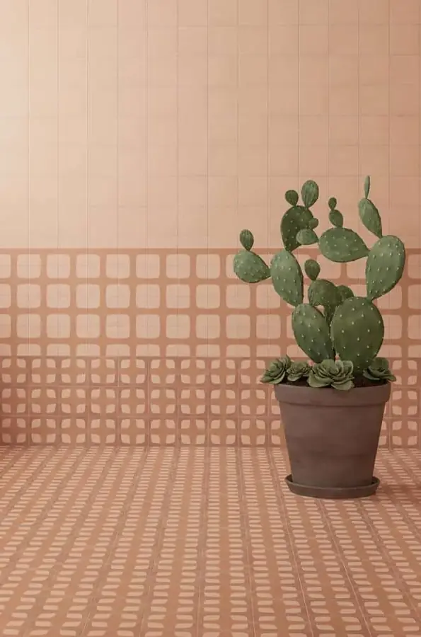
PorcelánicoPorcelánicos Betty - Mutina
La colección Betty combina una baldosa lisa con cuatro diseños ornamentales: T Shape, Plus, Frame y Set.
Estas piezas permiten crear efectos visuales como tramas, laberintos o incluso ilusiones ópticas, dotando a la pared de dinamismo y profundidad.
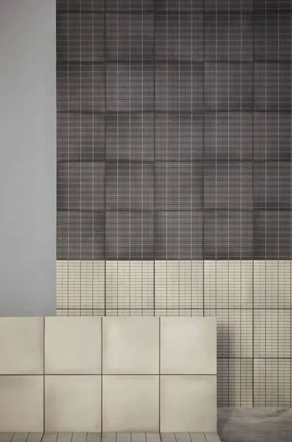
PorcelánicoPorcelánicos Aurore – Mutina
Inspirada en los dibujos de tiza que los niños trazan en las aceras, Aurore evoca inocencia y espontaneidad a través de tres versiones gráficas: un color liso, una cuadrícula de líneas abiertas (Grid L) y otra más cerrada (Grid S).
Disponible en cuatro tonos suaves y contemporáneos: Light Blue, Light Green, Light Grey y Charcoal.
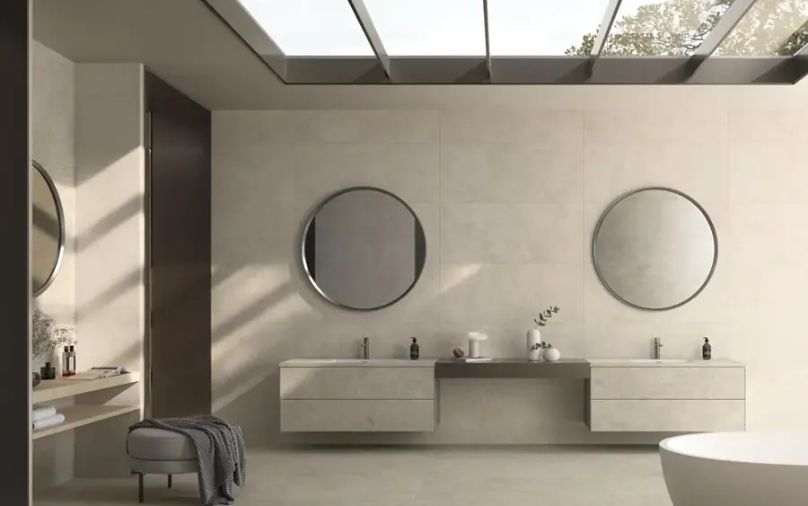
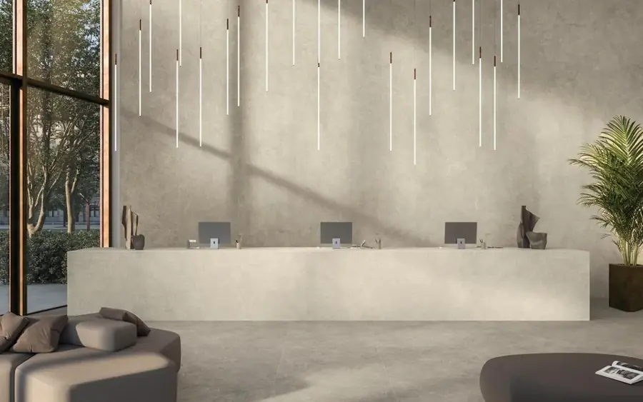
PorcelánicoRevestimientos 3D Boost Icor – AltaConcorde
Revestimientos murales con textura 3D ideales para proyectos residenciales o comerciales de alto nivel.
Su diseño conecta interiores y exteriores. Inspirados en la piedra caliza, la colección combina texturas naturales en tonos cálidos a la vez que luminosos.
Boost Icor está disponible en seis tonalidades, desde beiges acogedores hasta grises más fríos. Además, ofrece una amplia gama de formatos y acabados.
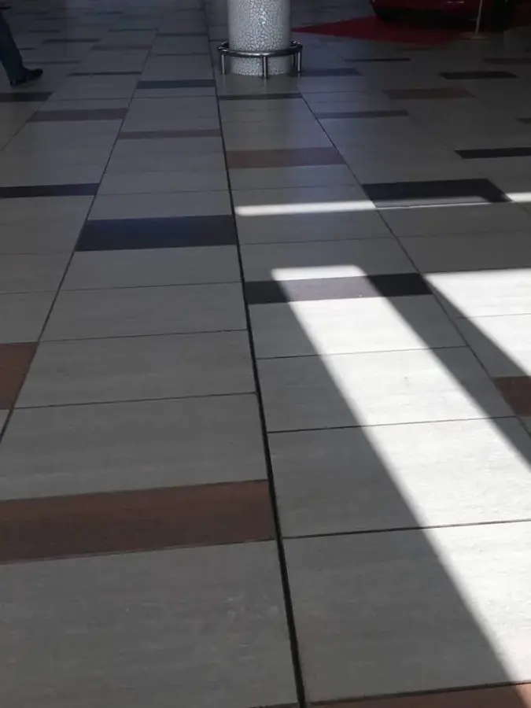
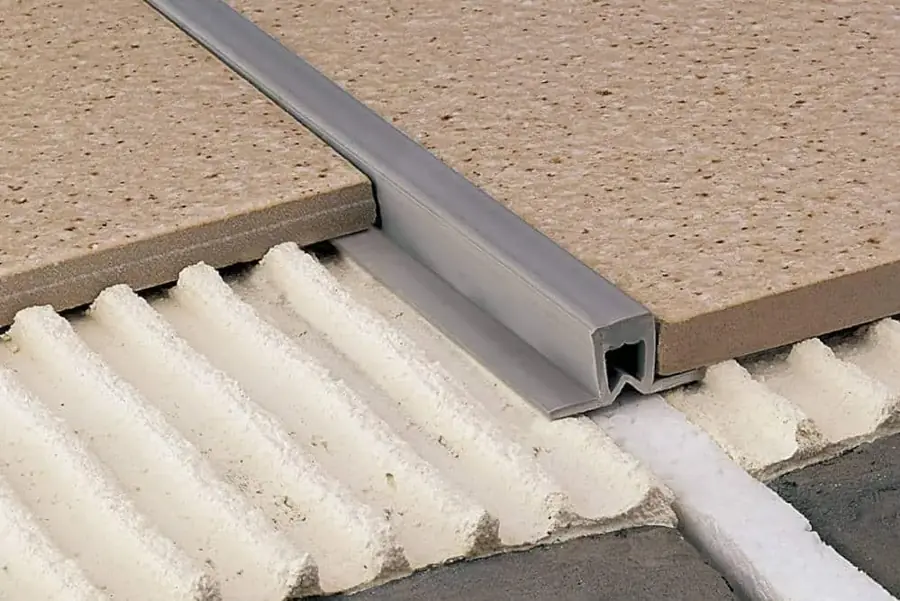
PorcelánicoJunta dilatación pavimentos Novojunta 3PVC – EMAC
Solución funcional para absorber movimientos en pavimentos y revestimientos, evitando fisuras o deformaciones.
Su diseño en PVC coextrusionado combina rigidez y flexibilidad, adaptándose a distintos espesores y condiciones, tanto en interior como en exterior.
Recomendado para superficies de hasta 16 m² en exteriores y 40 m² en interiores, con una separación máxima de 5 u 8 metros entre juntas, respectivamente.
Disponible en varios acabados, se integra discretamente en el diseño sin sacrificar su practicidad.
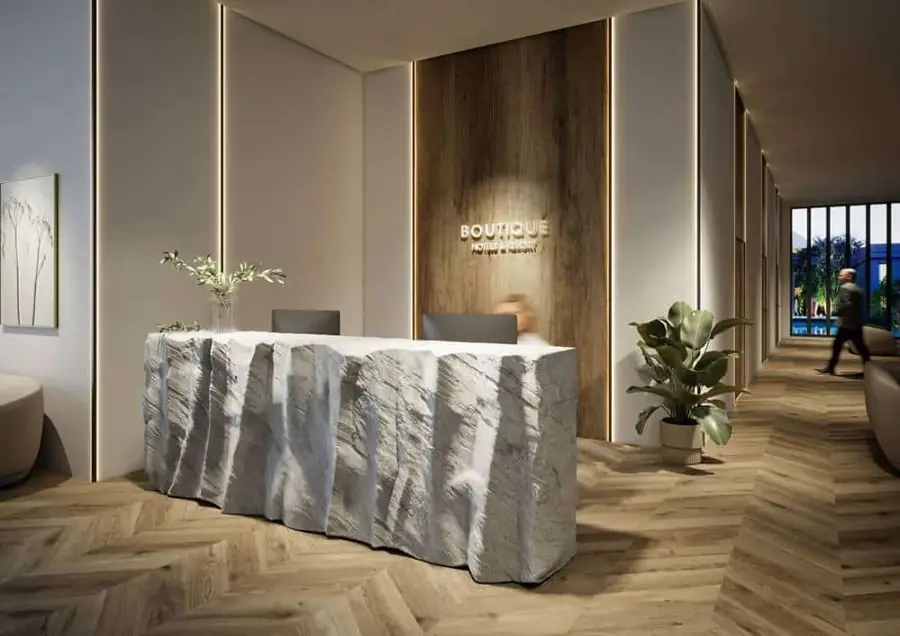
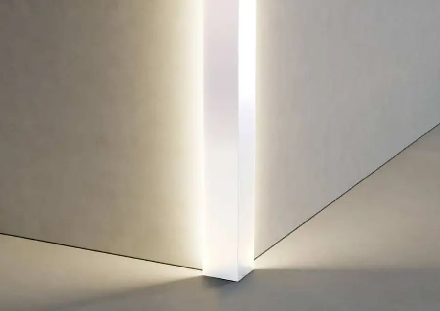
PorcelánicoPerfil Novoescuadra Eclipse® Sunset – EMAC
Perfil técnico que integra tiras LED, proyectando luz en ambas direcciones desde las esquinas.
Aporta una iluminación ambiental suave y envolvente, perfecta para baños, pasillos o zonas de relajación. Compatible con revestimientos de 8 a 13 mm.
Solución ideal para añadir un plano lumínico sutil y funcional sin recurrir a luminarias convencionales.
Disponible en negro, blanco y plata mate para mantener la coherencia estética del espacio.
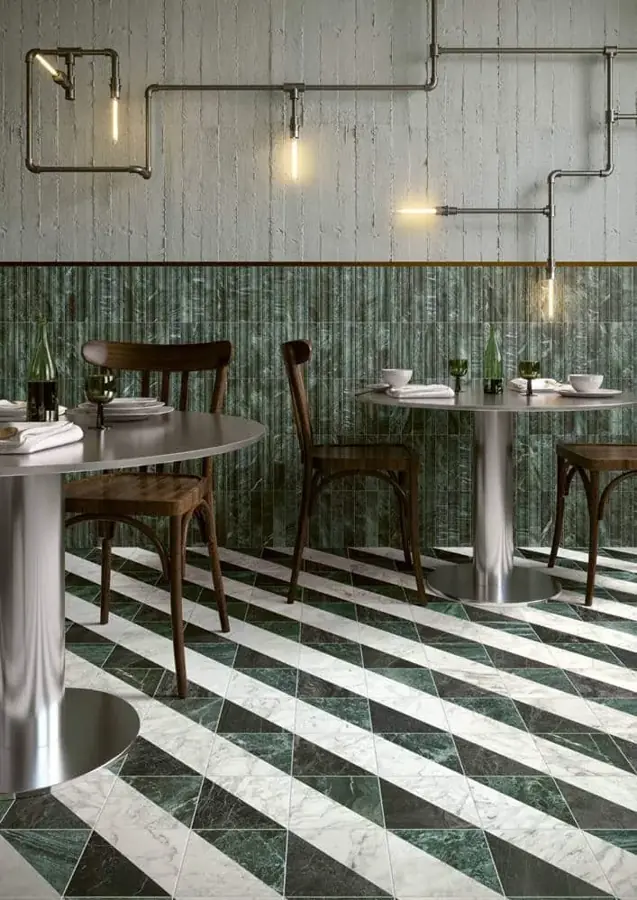
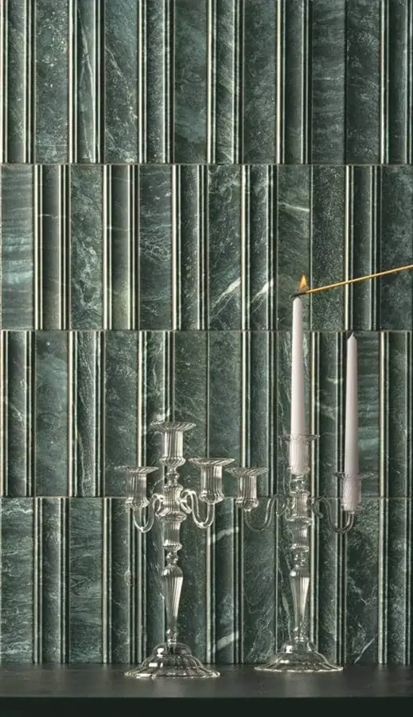
PorcelánicoGres porcelánico Dandy – 41zero42
Piezas cuadradas de 8,5 mm con estética de mármol reinterpretado. Sus más de 15 patrones geométricos permiten composiciones únicas y sofisticadas, ideales para zonas de entrada, baños o espacios donde se quiera generar impacto visual sin excesos.
Lo tienes disponible en blanco, negro y verde.
Una colección pensada para proyectos que apuestan por el detalle gráfico sin caer en el clasicismo.
Permite jugar con contrastes o integrarse en ambientes serenos y elegantes.
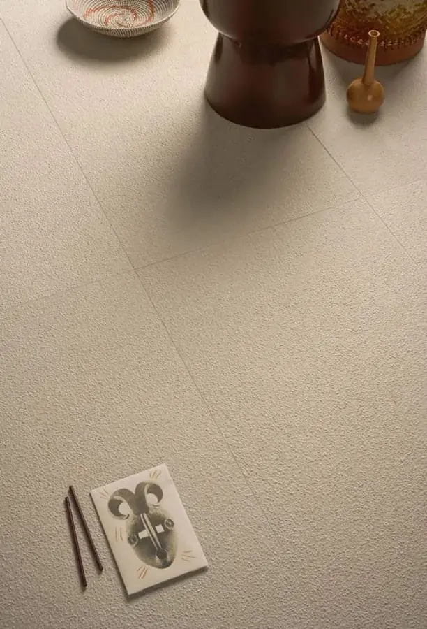
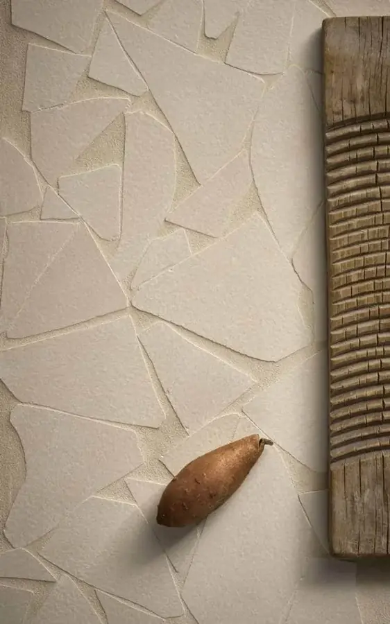
PorcelánicoGres porcelánico NOK – 41zero42
La casa italiana de referencia en diseños de cerámica presenta Nok. Todo un homenaje a la materia en su estado más puro, el diálogo perfecto entre lo terrenal y lo artístico.
Una propuesta contemporánea en gres porcelánico que evoca a la naturaleza con tonos que respiran la calidez de la arcilla, mientras sus texturas nos llevan a paisajes erosionados por el tiempo.
Entre trazos tribales y formas geométricas, sus 5 acabados decorativos narran historias ancestrales diferentes, añadiendo un ritmo vibrante a la estancia.
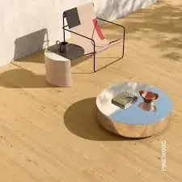
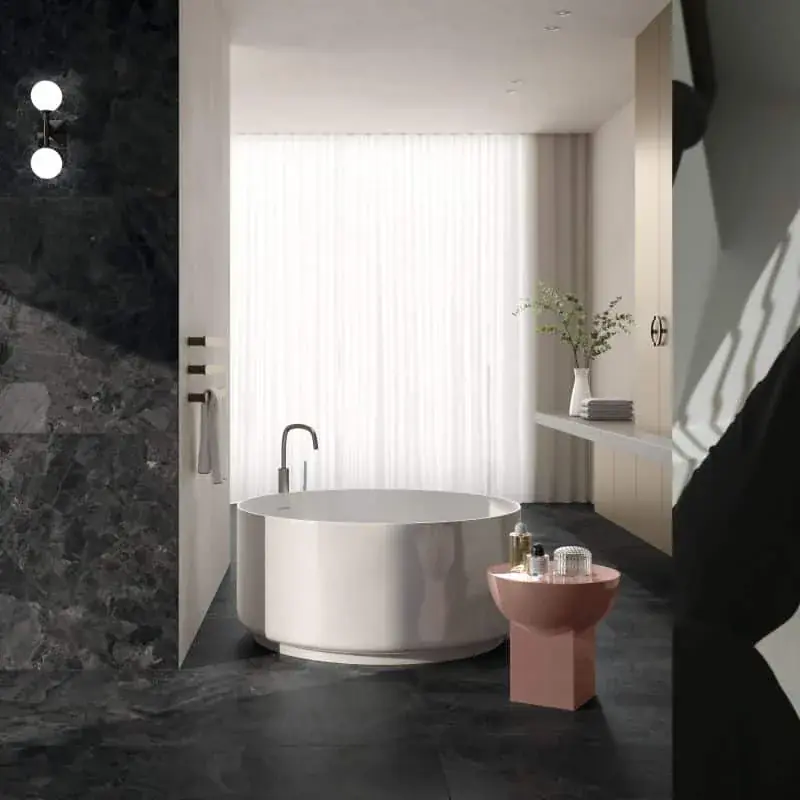
PorcelánicoGres porcelánico Reborn – Revigress
El gres porcelánico Reborn de Revigres conecta pasado y futuro, reinterpretando la tradición con la más puntera tecnología.
Inspiradas en las colinas toscanas y su arquitectura, estas colecciones destacan por su diseño natural y realista, evocando a la elegancia de la época con el uso de sus materiales, como el mármol y las maderas nobles.
Gracias a la tecnología de impresión digital en 3D, los revestimientos ofrecen gráficos y texturas que parecen envejecidos, creando espacios atemporales que fusionan lo clásico y lo contemporáneo.
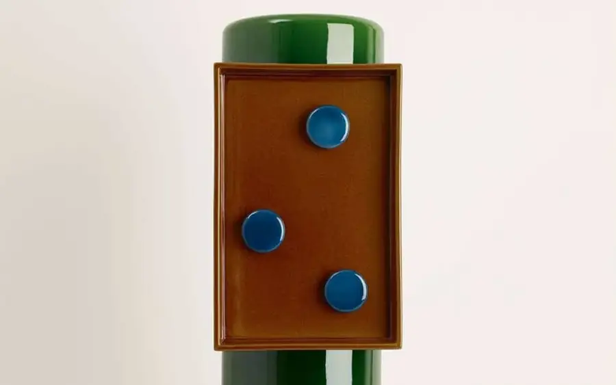
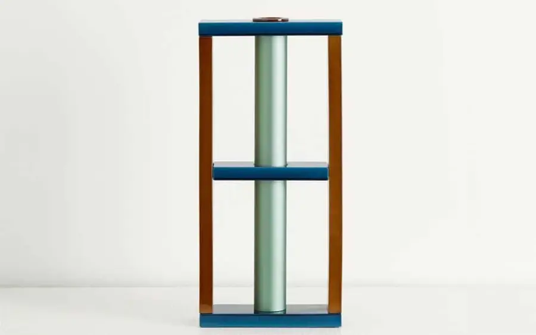
PorcelánicoDecoraciones en porcelánico – Mutina
Mutina Editions presenta su última colección de piezas de decoración en porcelánico: Jarrones diseñados por Ronan Bouroullec hechos a mano y con gran inspiración artesanal italiana.
Cada pieza, firmada y numerada, combina autenticidad y diseño moderno, ofreciendo decoraciones exclusivas y duraderas. Las nuevas ediciones respiran naturaleza y bucolismo, en formas orgánicas y colores terrestres.
Entre sus piezas destaca el modelo Talea y Camino, que fusionan cerámica con aluminio anodizado, los jarrones Finestra Giorno y Finestra Notte, que actúan como portales a mundos imaginarios, y el candelabro Candeliere que permite múltiples configuraciones.
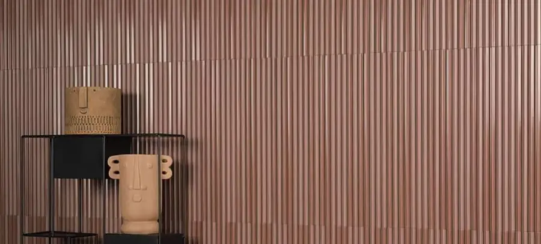
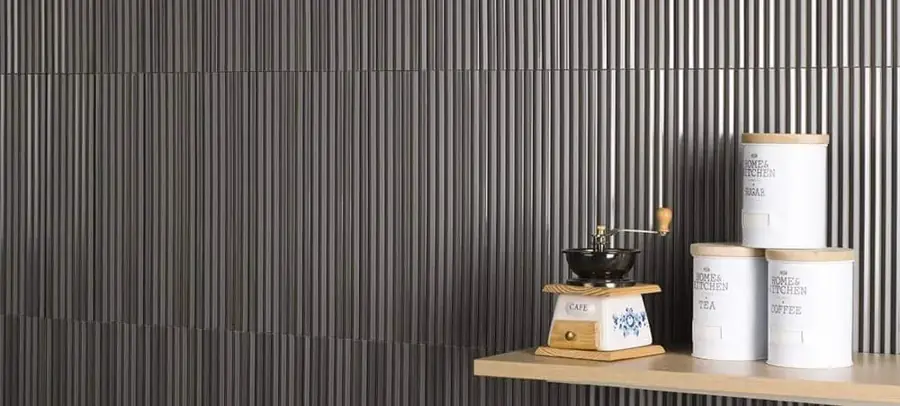
PorcelánicoRevestimiento Porcelánico con texturas Serie My U Deluxe – Natucer
Natucer se acoge a las nuevas tendencias para presentar su última serie de revestimientos porcelánicos “My U Deluxe».
Apostando por la innovación tecnológica, la colección nace para solucionar la cobertura en elementos curvos. Gracias a la técnica de extrusión que caracteriza su diseño en relieve, las piezas quedan unidas sin juntas ofreciendo un revestimiento en 3D continuo y sofisticado.
Con una estética minimalista, My U Deluxe de Natucer eleva cualquier estancia convirtiéndose en un elemento más decorativo y aportando textura a la superficie en la que se instala.
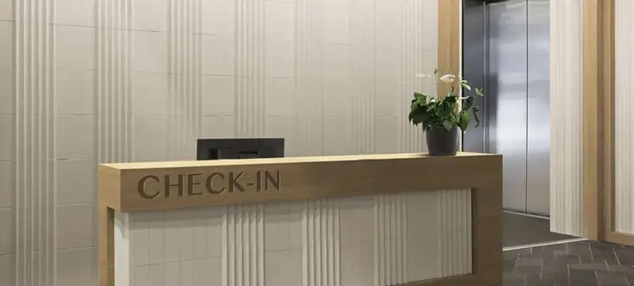
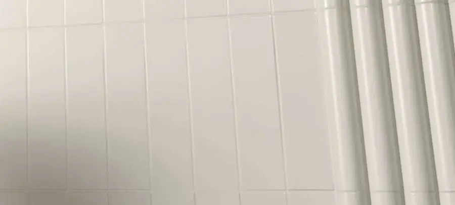
PorcelánicoRevestimiento Porcelánico efecto pintado a mano Serie Dynamic Angle - Natucer
La colección DYNAMIC ANGLE de Natucer se expande con una nueva línea de revestimientos porcelánicos que imitan el efecto acuarela pintado a mano.
Gracias al efecto artesanal de sus acabados, las piezas de esta colección añaden textura, profundidad y un dinamismo único a las paredes de cualquier hogar.
Su estética tridimensional no solo embellece, sino que también crea una experiencia visual envolvente, invitando a explorar cada detalle y acabado. Con esta incorporación, la colección eleva la decoración a nuevas alturas, ofreciendo un toque de elegancia y modernidad a la estancia.
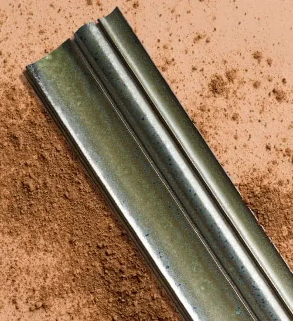
PorcelánicoRevestimientos con relieve 3D serie Techno - Natucer
Sumérgete en la osadía y genuinidad de la colección TECHNO de Natucer, una apuesta por los revestimientos en relieve 3D interpretada con esmaltes arriesgados y excitantes.
Sus tonos vibrantes llevan a esta nueva línea hacia una corriente artística moderna y refinada llena de reflejos en acabados metalizados que confluyen en un juego de luces y sombras.
La belleza de sus azulejos se extiende hasta la forma en que han sido diseñados para garantizar una fácil instalación, libre de juntas visibles. La colección asegura una colocación perfecta y homogénea.
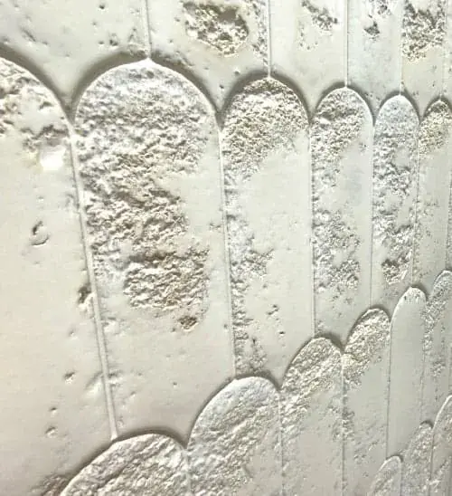
PorcelánicoRevestimientos imitación cerámica artesanal serie Palmetto - Natucer
Natucer lanza su nueva colección de revestimientos “PALMETTO”. Una serie de piezas en pasta blanca que imita la cerámica más artesanal, aunque con un proceso de producción industrializado capaz de satisfacer a todos los amantes de la marca.
PALMETTO pone en valor la autenticidad del trabajo manual, donde cada trabajo adquiere una forma única que hace especial a la pieza, un estilo en el que las imperfecciones se vuelven valiosas.
La colección se define por sus figuras escamadas, alargadas, evocando una sublimidad y encanto que solo hace que mejorar con el paso del tiempo.
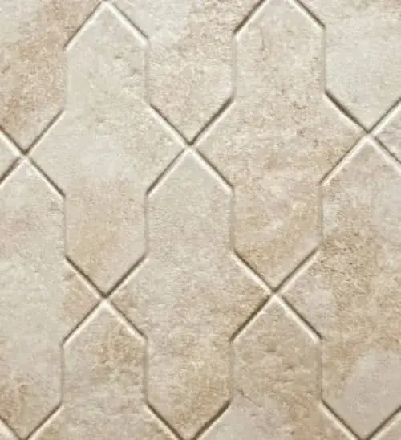
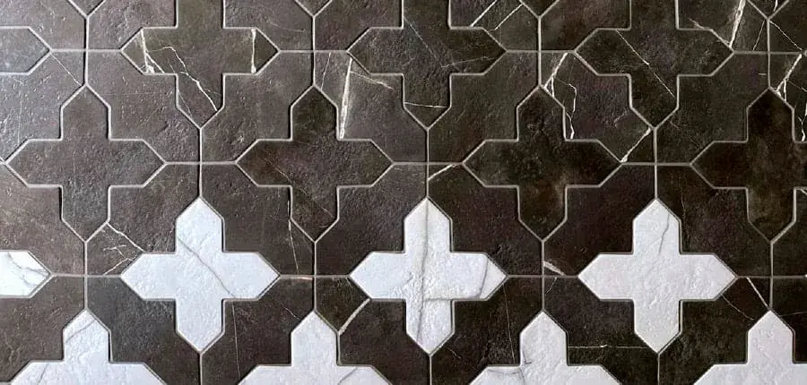
PorcelánicoRevestimiento porcelánico imitación piedra natural serie Istanbul y Petra – Natucer
Natucer te invita a sumergirte en la sinfonía de la naturaleza con sus nuevas colecciones de revestimiento porcelánico.
Inspiradas en los materiales que esta nos brinda, las series Instanbul y Petra ofrecen una variedad de formas combinables con detalles geométricos. Mientras que Instanbul consigue expresar la belleza intemporal del mármol, Pietra refleja las sutilezas de la piedra tallada.
Ambas colecciones están disponibles en cuatro formatos y formas distintas, diseñados para crear espacios con personalidad: en cuadrados 12×12, estrellas 15,5×15,5, Cruz 15,5×15,5 y Loop 18×6,2.
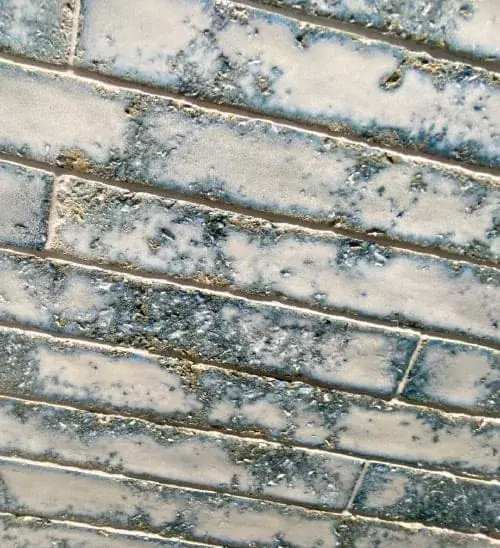
PorcelánicoAzulejos con relieves serie Crayon - Natucer
Descubre la autenticidad de la nueva colección de revestimientos Crayon de Natucer. La marca sorprende una vez más con esta serie de piezas que persigue la genuinidad en cada detalle.
Crayon se presenta en azulejos de 5×50, desiguales entre ellos, y con relieves artificiales e irregulares que consiguen recrear la artesanía tan típica de este material.
La colección está disponible en varios esmaltes y acabados, garantizando que todo tipo de gustos encuentren una solución adecuada a su necesidad.
- Porcelánico
Revestimiento porcelánicos Serie Mediterránea – Natucer
Sumérgete en la autenticidad de MEDITERRÁNEA, la colección de revestimientos porcelánicos de Natucer que celebra la belleza de lo imperfecto y la artesanía. Una conexión genuina con el entorno, donde cada pieza cuenta una historia propia.
La nueva serie de la marca nace de la reinterpretación de la naturaleza más pura, capturando su esencia en dos formatos únicos: el clásico cuadrado de 12×12 y el innovador LOOP.
Con relieves pronunciados y sutiles roturas diseñadas al detalle, MEDITERRÁNEA está disponible desde en blancos suaves, hasta marrones cálidos y azules serenos, evocando los colores del Mediterráneo.
- Porcelánico
Azulejos porcelánicos tipo espejo Mirror – Apavisa
Inspirada en las tendencias más actuales que marcan la arquitectura y el interiorismo moderno, nace Mirror. La innovadora colección de azulejos porcelánicos efecto espejo de Apavisa.
Bajo el prisma de la elegancia que define a la marca, Mirror llega con un objetivo claro: aportar la máxima sofisticación, amplitud y luminosidad a toda estancia. Transformando cualquier ambiente en un lugar único.
Sin perder su afán por adaptarse a cualquier necesidad espacial y estética, la colección está disponible en 7 tonalidades distintas y 3 formatos con medidas diferentes.
- Porcelánico
Porcelánicos colección Time – Mutina
Fruto de la creatividad de Edward Barber y Jay Osgerby, la colección de porcelánicos Time se erige como una indagación única de los procesos naturales de erosión, donde las corrientes del agua y el viento esculpen con singularidad las superficies, transformando lo áspero en una elegancia refinada.
La nueva línea se ofrece en tres tamaños (20,5×20,5cm / 3,9×20,5cm / 3,9×3,9cm) y hasta en ocho colores distintos, todos inspirados en la naturaleza y la geografía.
Por si fuera poco, el abanico de posibilidades, la colección se ofrece en 2 acabados distintos concebidos para ser combinados: Rough, con una superficie texturizada, y Smooth, suave al tacto y efecto mate.
- Porcelánico
Revestimientos tridimensionales 3D Wall Plaster – Atlas Concorde
Altas Concorde presenta su nueva apuesta de revestimientos para interiores conocida como “3D Wall Plaster”.
Compuesta por cinco diseños originales de cinco artistas reconocidos, cada pieza representa el estilo y personalidad de su autor.
Aunque diferentes, todas se inspiran en el tallado natural del yeso y sus formas naturales, formando relieves tridimensionales que funcionan como auténticos elementos decorativos, para espacios amplios y paredes de grandes dimensiones.
La interacción de la luz exterior con el relieve de las piezas intensifica la capacidad expresiva de los espacios, forjando estancias en constante transformación.
- Porcelánico
Porcelánicos Mater de Patricia Urquiola – Mutina
Mutina te acerca a los años 50 con la nueva colección de porcelánicos “Mater”, creada por la diseñadora y arquitecta española Patricia Urquiola.
La colección se inspira en la cerámica artesanal tan típica de los pueblos costeros italianos. De ahí precisamente nace su nombre, Mater, evocando a la tierra utilizada para crear la base de la serie.
En el diseño de sus piezas el esmalte juega un papel protagónico disponible en tonos tierra, naranjas y azules. Esta versatilidad, nos brinda la oportunidad de combinar los elementos logrando resultados únicos e irrepetibles.
Recientemente se han introducido nuevos tamaños, ajustándose así a cualquier necesidad: 15x60cm, 60×60 y 120x120cm
- Porcelánico
Gres porcelánico Cromática 3.0 – Revigres
Revigres lanza su nueva colección de revestimientos y pavimientos en Gres Porcelánico Técnico, “Cromática 3.0”.
Una gama diseñada en más de 30 tonos que van desde lo más frío a lo más cálido, adecuando su intensidad a la necesidad lumínica de cada espacio.
Caracterizada por sus piezas planas, con líneas sencillas y limpias, consigue adaptarse a los nuevos tiempos creando estancias agradables e integradas a nivel cromático.
La técnica empleada en su diseño garantiza la máxima resistencia, sostenibilidad y eficiencia energética, convirtiéndose en la mejor opción tanto para espacios públicos como residenciales.
- Porcelánico
Porcelánicos Multicolor Superclassica SCW – 41zero42
Porcelánicos que son un lienzo en blanco para crear combinaciones de colores, tanto en interior como en exterior. 41zero42 te ofrece Multicolor Superclassica SCW, disponible en ocho acabados diferentes y en siete tamaños.